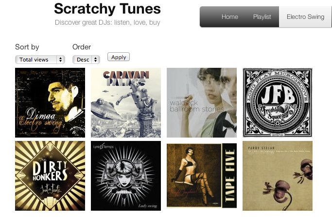

OMFG! Boom! War ja klar dass das kommen musste. Der Dubstep schreckt auch vor unserem Swing nicht zurück:
Defunk „Retro Baby“
Jetzt und waaahnsinns drop!
OMFG! Boom! War ja klar dass das kommen musste. Der Dubstep schreckt auch vor unserem Swing nicht zurück:
Defunk „Retro Baby“
Jetzt und waaahnsinns drop!

Ui, schönes Blog über Electro Swing und all den ganzen Turntablism, HipHopppigen DJ Tunes.
http://scratchytunes.com/electro-swing
Ups, tja das ist’s doch glatt an mir vorbei gegangen. Aus der serh schönen Swing Sampler Reihe „Swing Style“ wurde im Sommer die nächste Volume #3 released. Wie immer wirds gegen Ende bissl Electro swinging, und so auch dieses Mal. Meinem Geschmack nach zwar etwas zuviel – ich befürchte so mancher Song wird da bald After-Skizelt laufen… Aber höst man darüber mal weg wird man mit doch so manchen schönen Songe belohnt. Bei mir ganz oben: Bright Lights Late Nights – The Speakeasies‘ Swing Band!
Hier anschaun, anhörn, kaufen:
http://www.lolasworldrecords.com/index.php?option=com_virtuemart&page=shop.product_details&flypage=lola_flypage_mp3.tpl&product_id=4064&lang=en
Mehr Infos zu Shag gibt es hier: http://www.bigbanddancers.de/swing.html
Infos/Anmeldung zum Kurs gibt es hier: http://www.b-swingt.de/php/popup_clinfo.php?id=192
Date/Time
Date(s) - 15. 11. 2012
18:00 - 19:15
Location
B-Swingt Berlin

Zum Wochenende mal wieder ein bissl Electro Swing Dingens:

DER LÖWE BRÜLLT, UND DAS LAUT:
Wo einst die Dartpfeile die abgestandene Luft durchschnitten, werden jetzt fetzige Riffs geblasen – heißer Jazz zum Tanzen!
Lange nicht gesehen, doch wiedererkannt:
Der verlorenen Sohn Griechenlands, James Wylie (Altsaxophon), ist zu Besuch in der Hauptstadt.
Darüber freuen sich Moritz Köther (Altsaxophon) und Bastian Duncker (Altsaxophon) und verabreden sich vor lauter Wiedersehensfreude zu einer Session.
Zu Gast an diesem Abend auch das Traumduett der Jamsession des Musikclubs „Yorkschlösschen“:
Patrick Braun (Tenorsaxophon) und Niels Unbehagen (Klavier).
Unterstützt werden die Spielwütigen von einer brillianten Rhythmussymbiose Norwegens und Italiens:
Kalle Enkelmann (Kontrabass) und Ugo Alunni (Schlagzeug).
James Wylie (Altsaxophon)
Bastian Duncker (Altsaxophon)
Moritz Köther (Altsaxophon)
Patrick Braun (Tenorsaxophon)
Niels Unbehagen (Klavier)
Kalle Enkelmann (Kontrabass)
Ugo Alunni (Schagzeug)
Dieser bunte Haufen wills euch zeigen.
Also kommt vorbei im Löwen wenn es wieder heißt: Sau raus, Löwe rein!
Dienstag, 30.10.2012
„alter roter löwe rein“
Richardstraße 31 / Ecke Uthmannstraße
(U-BHF: KARL-MARX-STRAßE U7)
Eintritt: 5 Euro
SHOWTIME: 19:30H
[via ccb23 / newsletter]
Date/Time
Date(s) - 30. 10. 2012
19:30 - 23:59
Location
Alter Roter Löwe Rein

Lindy Hop/Swing Dance mit Jan Forward und Brigitte Berendes
Donnerstags, 19:30–21:00 Uhr (danach freies üben)
Stufe: mit Vorkenntnissen – Probestunde kostenlos. Anfängerkurs in Vorbereitung!
Bei Interesse bitte bei TapBeat melden: Tel.: (030)886 24 158 oder info@tapbeat.de
http://tapbeat.de/de/workshops-events/
Swingtanzabend mit der Brave Buben Band Berlin!
Schöner Tanzboden, leckeres Essen, stilvoller Saal!
Eintritt: 8,00 EUR
Date/Time
Date(s) - 26. 10. 2012
19:00 - 23:30
Location
Ballsaal Friedrichshagen im Bräustübl

Free Swing Lesson 21:15
***
Live Swing Band ‚Polish Coffee‘ from Budapest
***
Swing Dance Show
***
Free drink if you dress 20’s-40’s
***
DJs: Marcus Is Stranger Than Fiction, Balboa Cid and Peter Power
***
€3 / €5 After 23:00
***
RA Event: http://www.residentadvisor.net/event.aspx?413052
https://www.facebook.com/events/426581787391422/
Date/Time
Date(s) - 25. 10. 2012
21:00
Location
Loftus Hall

BALBOA BOTSCHAFT – Balboa Swingtanz für Berlin
Neue Kurse mit Anna & Matti:
-> BALBOA I – Swingtanzkurs für Beginner und Auffrischer
ab 14.11., Mittwochs 19:00 Uhr, 6 Termine á 75min, 60€/Person
-> BALBOA II – mehr Balboa
ab 15.11., Donnerstags 21:00 Uhr, 6 Termine á 75min, 60€/Person
-> BALBOA III – viel mehr Balboa
ab 15.11., Donnerstags 19:30 Uhr, 6 Termine á 75min, 60€/Person
-> BALBOA Diplomatenrunde
ab 14.11., Mittwochs 20:30 Uhr, 6 Termine á 75min, 60€/Person
Für Beginner & Auffrischer, die es nicht zum regelmässigen Kurs schaffen
oder alles (nochmal) am Stück wollen:
-> BALBOA Swingtanz Wochenend-Workshop für Beginner & Auffrischer
1. & 2.12., je 13:30 bis 17:30 Uhr, 7h Unterricht für 70€ pro Person
oder bei Paaranmeldung 60€ pro Einzelperson (Schnäppchen)
Kursbeschreibungen, Termine, Wegbeschreibung:
www.balboa-botschaft.de

Am Freitag lief ‚Die Swingmädchen‘ auf Arte. Ein TV-Zweiteiler über ein Gesangstrio im Italien der Mussolini-Ära“ – Verpasst? Zum Glück kann man den Film (noch) online sehen:
http://videos.arte.tv/de/videos/die-swingmaedchen-1-2–7002028.html
[Foto: ARTE F]

Hier mal anschaun:
http://www.rbb-online.de/stilbruch/archiv/stilbruch_vom_11_10/swing_dj_stephan_wuthe.html

Hier noch ein kleines Electro Swing Mitbringsel von meinem Griechenland Urlaub:
Imam baildi – Carantino Manouche
Eintritt: 8,00 EUR
Date/Time
Date(s) - 28. 09. 2012
19:00 - 23:59
Location
Ballsaal Friedrichshagen im Bräustübl